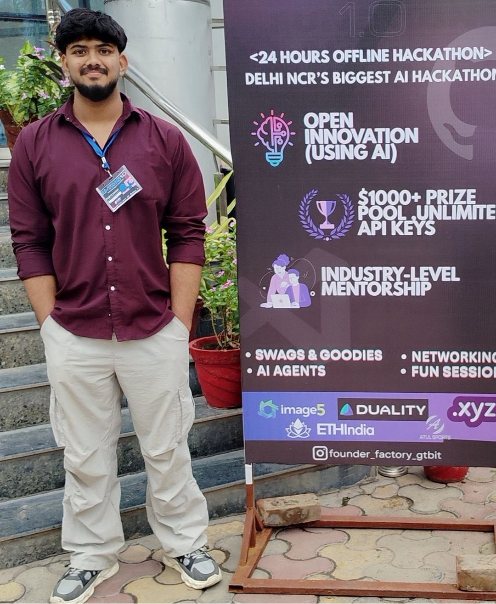

Hello! I'm Naman Pratap Singh, a passionate and versatile developer pursuing a Bachelor of Computer Applications from Galgotias University. With a keen eye for innovation and problem-solving, I specialize in crafting intelligent, user-focused digital solutions that blend technology with real-world impact.
From building AI-powered healthcare chatbots to developing disaster management platforms, my projects reflect a strong commitment to leveraging emerging technologies like Artificial Intelligence, Cybersecurity, IoT, and Fintech to solve meaningful challenges. I've honed my skills through hands-on internships with Infosys, AWS, and Zscaler, as well as a virtual Android Development program certified by Google under AICTE.
I aim to bridge the gap between people and technology through intuitive design, scalable architecture, and impactful solutions. Whether it's designing a secure cloud infrastructure or enhancing user experiences through mobile and web apps, I focus on innovation with purpose. Let's create something impactful—together.
